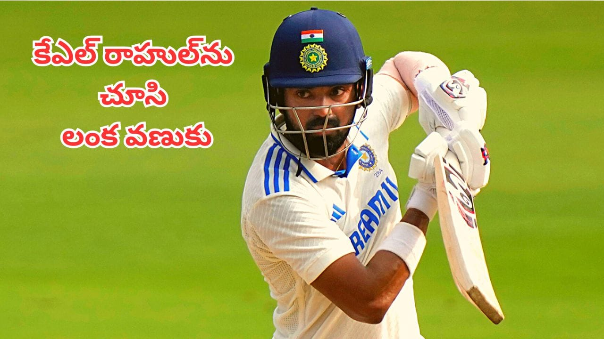

🏏 రాహుల్తోనే శ్రీలంకకు ప్రమాదం.. ధనంజయ డి సిల్వా ఏమన్నారంటే?

టీమ్ ఇండియా స్టార్ బ్యాటర్ కేఎల్ రాహుల్ విషయంలో శ్రీలంక మాజీ/కెప్టెన్ ధనంజయ డి సిల్వా కీలక వ్యాఖ్యలు చేశారు.
టీమ్ ఇండియాతో జరిగే మ్యాచ్ల్లో శ్రీలంకకు రాహుల్ ప్రధాన ప్రమాదంగా మారే అవకాశం ఉందని ధనంజయ డి సిల్వా అభిప్రాయపడ్డారు. ప్రస్తుతం ఉన్న భారత బ్యాటర్లలో రాహుల్ తమకు చాలా ప్రమాదకరమైన ఆటగాడని ఆయన పేర్కొన్నారు. ముఖ్యంగా శ్రీలంక గడ్డపై రాహుల్కు ఉన్న అనుభవమే ఇందుకు కారణమని తెలిపారు.
రాహుల్కు శ్రీలంకలో ఆడిన అనుభవం కొత్తదేమీ కాదు. 2017లో శ్రీలంకతో జరిగిన టెస్ట్ సిరీస్లో రాహుల్ అద్భుతమైన బ్యాటింగ్తో ఆకట్టుకున్నారు. అక్కడి పరిస్థితులకు తగ్గట్టుగా బ్యాటింగ్ చేస్తూ శ్రీలంక బౌలర్లను తీవ్రంగా ఇబ్బంది పెట్టారు.

అందుకే ఈసారి కూడా రాహుల్ క్రీజులో ఎక్కువసేపు నిలబడితే శ్రీలంకకు కష్టాలు తప్పవని ధనంజయ డి సిల్వా భావిస్తున్నారు.
ముఖ్యమైన అంశాలు & విశేషాలు:
- వికెట్ వేగంగా తీయాలి: శ్రీలంక బౌలర్లు రాహుల్ను వీలైనంత త్వరగా అవుట్ చేయాల్సిన అవసరం ఉంది.
- మ్యాచ్ను తిప్పే సత్తా: రాహుల్ ఒకసారి క్రీజులో సెటిల్ అయితే తన షాట్లతో మ్యాచ్ను భారత్ వైపు తిప్పగలడు.
- పరిస్థితులకు తగ్గట్టు ఆట: అవసరమైనప్పుడు ఓపికగా ఆడటం, అవకాశం దొరికినప్పుడు ఎదురుదాడి చేయడం అతని ప్రత్యేకత.
ధనంజయ డి సిల్వా వ్యాఖ్యలతో రాహుల్పై మరోసారి అందరి దృష్టి పడింది. శ్రీలంక గడ్డపై గతంలో చూపించిన ఫామ్ను రాహుల్ మరోసారి కొనసాగిస్తే.. భారత జట్టుకు అది భారీ ప్లస్గా మారనుంది. అయితే శ్రీలంక బౌలర్లు రాహుల్ను ఆరంభంలోనే కట్టడి చేయగలిగితే మాత్రం భారత బ్యాటింగ్పై ఒత్తిడి పెంచే అవకాశం ఉంటుంది.
మరి ఈసారి కేఎల్ రాహుల్ మరోసారి శ్రీలంకపై తన బ్యాటింగ్ సత్తా చూపిస్తారా? లేక ధనంజయ డి సిల్వా చెప్పినట్లుగానే శ్రీలంకకు రాహుల్ పెద్ద ప్రమాదంగా మారతారా? అనేది చూడాలి.
← హోమ్ పేజీకి వెళ్లండి